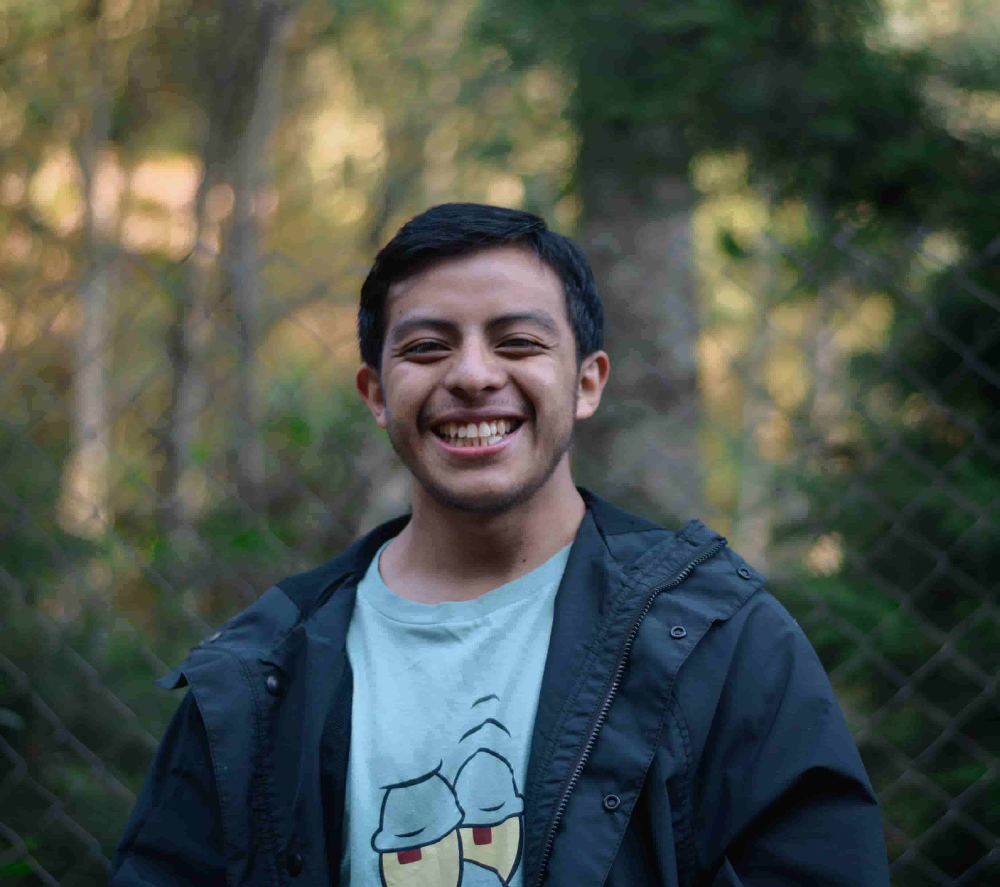
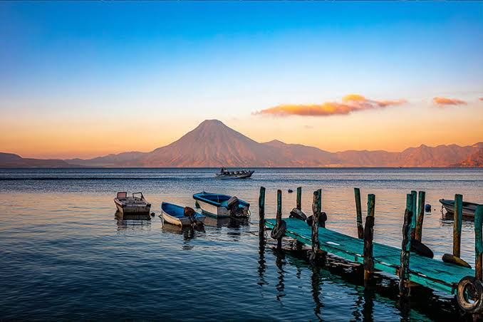

Diego Tzep
About Me

My name is Diego Tzep, I was born in Guatemala, I live now with my family in Guatemala. I am studying a web development course and I enjoy learning new things.
Atitlán Lake

Lake Atitlán is a stunning volcanic crater lake located in the department of Sololá, Guatemala. The lake is dramatically framed by three prominent, cone-shaped volcanoes along its southern shore: San Pedro, Tolimán and Atitlán